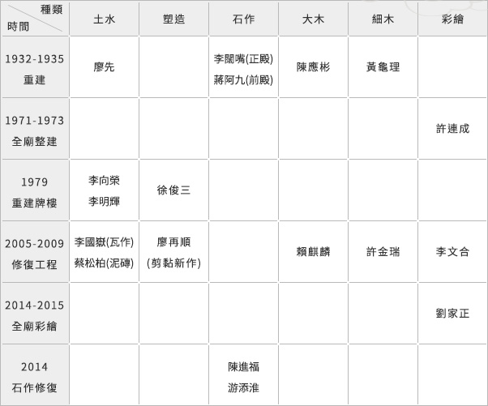

歷次整建：薪傳國寶，名師如雲
陳應彬
1864~1944，漳州南靖人，生在今新北市中和區，12歲開始隨父親陳井泉、兄長陳應倫學習木工，曾隨父參與1875年下泰山巖的肇建，後名滿全臺，是1981年陳文成事件主角的曾祖父。全臺許多大廟如北港朝天宮(1908~1912)、臺北慈聖宮(1910)、臺北陳德星堂(1912)、澳底仁和宮(1913)、龜山壽山巖(1915)、板橋接雲寺(1916)、豐原慈濟宮(1916)、臺北保安宮(1917對場作)、關子嶺大仙寺(1918)、木柵指南宮(1921)、臺中林氏宗廟(1922)、臺北劍潭寺(1923)、臺中樂成宮(1924)、羅東震安宮(1924)、桃園景福宮(1925)、三重先嗇宮(1925對場作)、中和福和宮(1927)、樹林濟安宮(1927)、麥寮拱範宮（1930）、本巖(1933~1935)、金山慈護宮(1935)、新莊地藏庵(1937對場作)等都是其作品。其派下學徒陳己堂、陳己元、陳和由、廖石城、陳專琳、林火寅、陳田、陳宏、胡賢、黃龜理等也都譽貫四海。廖先
臺北迪化街著名的泥水匠師，約出生於日治初期，曾與泰山的泥水匠師李向榮一起負責造脊，1930年代承建許多寺廟與宅第，包括桃園景福宮、龜山壽山巖及本巖等，人稱「阿連司」。李向榮
新北市泰山區人。其師父吳水出身泰山溝仔墘，是與廖伍齊名的泥水匠師，擔任過艋舺龍山寺修建委員會建設組長、關渡媽祖廟董事兼工務組長、財團法人臺灣省臺北縣竹林山觀音寺董事會多屆董事長。李向榮曾隨師父吳水工作，艋舺龍山寺、臺北關渡宮等都曾做過，也常配合陳己堂、廖先、陳天乞、徐俊三一起造脊，傳徒其子李明輝。1973年，張木成承包的下泰山巖三川殿石牌樓工程中，李向榮擔任監造委員。黃龜理
1902~1995，15 歲追隨陳應彬學習木工，全臺各大廟宇中的神龕或通隨、托木等，常有其傳世傑作，屏東萬丹萬惠宮、中和福和宮、金瓜石勸濟堂、淡水清水巖、士林慈諴宮、臺北關渡宮、林口竹林山寺、艋舺龍山寺、本巖等即是如此。1964年李梅樹延聘他到國立藝專教授木雕10年。1985年獲頒教育部全國民族藝術薪傳獎。1989年被遴選為民族藝師。2001年新北市藝文中心1樓設立黃龜理紀念館。黃龜理在本巖的作品是無限珍貴的文化資產，計有下列各處：正殿中央正龕、左右邊龕；拜殿左右獸座(兩獅座、兩象座)；拜殿左右圓光(暴紂十罪、華容道放曹)；前殿前步口左右圓光(演義武場、劉備躍馬過檀溪)；前殿後步口左右圓光(岳母刺字、徐母罵曹)；前殿前步口左右壽樑脚(渭水聘賢、關羽單刀赴會)。李闊嘴
來自泉州惠安，約生於1880年，1900年代來臺工作，住在臺北大稻埕，與陳應彬合作多場，1933年陳應彬主持頂泰山巖的重建，正殿與部分前殿石作就是請他負責。對書卷竹節窗的雕塑尤其拿手，他所雕塑臺北保安宮(1917)、臺中林氏宗廟(1922)、中和福和宮(1927)、員林福寧宮(1928)、田中書山祠(1930)、本巖(1933)等爐火純青的書卷竹節窗至今仍在使用。蔣阿九
或稱為蔣九(仔)，1899~1973，與定居鹿港的知名石匠蔣馨一樣，出身自泉州惠安崇武峰前村，同樣是「仁」字輩的峰前蔣家石匠。可能在1924年來臺，投入也出身惠安的石匠張火廣所主持的桃園八德三元宮石雕工程。在八德再娶妻生子，1929年臺灣妻在八德為他生下女兒蔣華英。1931~1932蔣九隨父親蔣匏承包麥寮拱範宮重建石雕工程。在拱範宮結識陳應彬的班底林火寅、陳專琳、廖石城等匠師，可能由他們的居中牽線，蔣阿九在1933年前來本巖承作前殿石雕，1934年完工。1936年後，定居於雲林土庫，開設「惠安石店」。惠安妻所生長子蔣文鳳(峰)婚後到西螺開設「西螺惠安石舖」，目前由長孫蔣國振主持。 其他作品另有大埤三山國王廟(1935)、土庫順天宮(1936)、麥寮光大寮聚寶宮(1937)、臺西五條港安西府(1945)、雲林東勢賜安宮(1949)、褒忠馬鳴山鎮安宮(1951)、布袋過溝健德宮(1964)、斗南順安宮(1966)、義竹新店紹徽宮(1967)等。1969年，北港朝天宮廟埕入口處有新萬仁(綠油精)藥廠所敬獻的石獅一對，由蔣九、蔣文鳳(峰)、蔣國振祖孫三人共同施作，落款「西螺惠安石鋪蔣文峰督造」。許連成
1919年生於臺北市大橋町(今民樂街110號，迪化街旁)，卒於2002年。1945年遷居三重市三和路3段107巷3號，後在此創建主祀觀音菩薩的「慈雲寺」。生於彩繪世家，受祖父許章瑞及父親許幼的指導，學習茶箱彩繪、掛軸神像、神明彩畫及開面技藝，後來跟隨彩繪名師洪寶真(憨師)工作，暗自學習建築彩繪，終能獨當一面、自立門戶，北部近百家的知名宮廟都有他的作品，而擠身名師之列。舉例而言，新莊地藏庵就有三次請他進行彩繪，分別在1964、1992、2002年。 許連成的門神彩繪喜愛「紅配綠」配色，鬍鬚尤其細緻，絲絲入扣。一般認為許連成的建築彩繪擅長「門神」與「壁畫」。1973年為本巖完成全廟彩繪，今本巖財神爺殿仍保有其韋馱、伽藍壁畫。次子許榮德、三子許榮宗繼承衣缽，也從事彩繪工作。徐俊三
1941年生於林口，1955年隨父遷回泰山鄉黎明村橫窠雅老家。1956年，拜2004年薪傳獎得主姚自來為師，在姚自來的帶領下，從艋舺龍山寺開始做起，學習翹脊、泥塑、剪黏(剪花)及南燙(交趾陶)之傳統技藝，也見識到剪黏材料由碗片，變化到加入彩色玻璃、壓克力、陶片等。靠著細心、毅力、謹慎、靈巧，徐俊三做好師父交代的每一件工作。1960年出師。1975年起，徐俊三設窯自燒，人稱「北部窯」，近年主持臺北保安宮剪黏修復工程的潘坤地就是他的徒弟。 徐俊三修建的宮廟多如過江之鯽，遠近都有，如新莊慈祐宮、新莊地藏庵、木柵指南宮、南鯤鯓代天府、樹林濟安宮、樹林千歲廟、八里廖添丁廟、新市北極殿、野柳保安宮、松山奉天宮、屏東玉皇宮、林口贊天宮、白沙屯拱天宮、東港東隆宮、臺南四鯤鯓龍山寺等，不下百家。在1979年，曾承建本巖應化街口牌樓。2012年完成重建的林口竹林山觀音寺也是請他承作脊飾、石刻。徐俊三熱心教育，今亦擔任桃園市光啟高級中學董事會董事。廖再順
高雄市杉林區人，1956年次。國小畢業後拜臺南剪黏名師葉鬃之長子、亦是剪黏匠師葉進益為師，學習剪黏技術，約17歲時獲得進益師的肯定而出師。師祖洪華、師公葉鬃、師父葉進益、師叔葉進祿，都是名震江湖的剪黏翹楚，葉家三代傳承，雄霸南臺。全臺各大宮廟都曾留下廖再順登峰造極的作品，例如高雄右昌元帥府、旗津媽祖廟、南鯤鯓代天府、高雄(哈瑪星)代天宮、大甲鎮安宮、臺中元保宮、竹山李勇廟、臺中樂成宮、新竹長和宮、竹南慈裕宮、屏東崇蘭社區蕭氏家廟、臺中張家祖廟、佳里震興宮、臺南新市大洲保安宮、泰山本巖等。劉家正
1955年生於南投信義鄉，號玉山人，師事曾竹根(係劉家正的姨父，臺南畫師潘春源的門下)、丁網，彩繪過500多家宮廟，遍及全臺，不及備載。作品展覽多次，獲獎無數，係文化部登錄門神彩繪之文化資產保存者。2014年，劉家正藝師成立鼎臻傳統藝術坊後，本巖全廟彩繪為其第一個大型接案，殫精竭慮，脫離「整舊如舊」的傳統思維，揮灑其出神入化的技藝，本巖的門神、壁畫正是他40幾年功力的精華展現，2015年竣工。